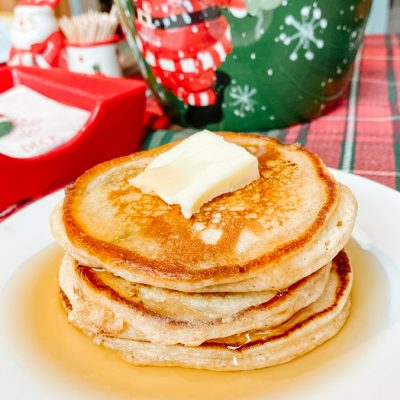
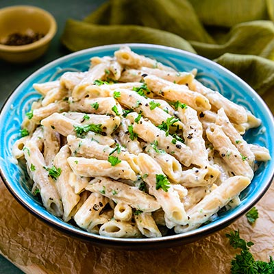

Pancakes

Ingredients:
- 1 cup all-purpose flour
- 1 tablespoon sugar
- 1 teaspoon baking powder
- 1/2 teaspoon baking soda
- 1/2 teaspoon salt
- 1 cup buttermilk
- 1 egg
- 2 tablespoons unsalted butter, melted
Instructions:
- In a large bowl, whisk together flour, sugar, baking powder, baking soda, and salt.
- In another bowl, whisk together buttermilk, egg, and melted butter.
- Pour wet ingredients into dry ingredients and stir until just combined.
- Heat a griddle or non-stick skillet over medium heat.
- Pour 1/4 cup batter onto the griddle for each pancake.
- Cook until bubbles form on the surface, then flip and cook until golden brown.
Pasta

Ingredients:
- 8 oz spaghetti
- 2 tablespoons olive oil
- 4 cloves garlic, minced
- 1/2 teaspoon red pepper flakes
- 1 can (14.5 oz) diced tomatoes
- 1/4 cup chopped fresh basil
- Salt and pepper to taste
- Grated Parmesan cheese for serving
Instructions:
- Cook spaghetti according to package instructions.
- In a large skillet, heat olive oil over medium heat.
- Add garlic and red pepper flakes, and cook until garlic is fragrant.
- Add diced tomatoes (with juices) and simmer for 10 minutes.
- Stir in cooked spaghetti and basil, and season with salt and pepper.
- Serve with grated Parmesan cheese.